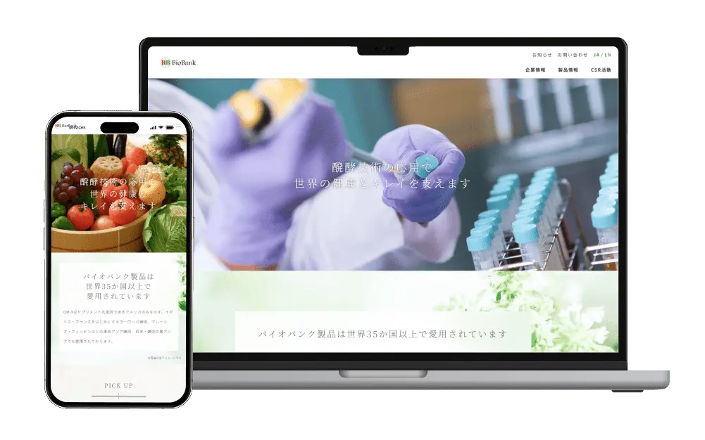

バイオバンク

初めてのtoBサイト制作で得た貴重な経験
バイオバンクの公式サイト制作に携わり、下層ページのデザイン全般と、構成検討や要件定義からプロジェクトに深く関わりました。
初めてのtoB（企業向け）サイト制作だったため、業界特有の専門的な内容や仕様に戸惑うこともありましたが、クライアントやチームと何度もコミュニケーションを取りながら、理解を深めて進めることができました。
この案件では、単に「見た目を良くする」だけでなく、企業ユーザーが求める情報をわかりやすく整理し、信頼感を損なわないデザイン設計が求められました。
そのため、情報設計からユーザーの動線設計まで意識し、デザイン面でも落ち着いた色使いと読みやすいフォントを選定。専門性の高いコンテンツでも親しみやすく、かつプロフェッショナルに見えるバランスを大切にしました。
また、要件定義の段階から参加したことで、サイトの目的やユーザー層を明確に理解した上で、必要な機能やコンテンツの整理にも貢献できました。
初めてのtoB案件での挑戦は大変でしたが、その分多くの知識と経験を得られ、自分のデザインスキルの幅が広がったことを実感しています。
今後も、この経験を活かして、より多様なジャンルや目的のWEBデザインに対応していきたいと思っています。